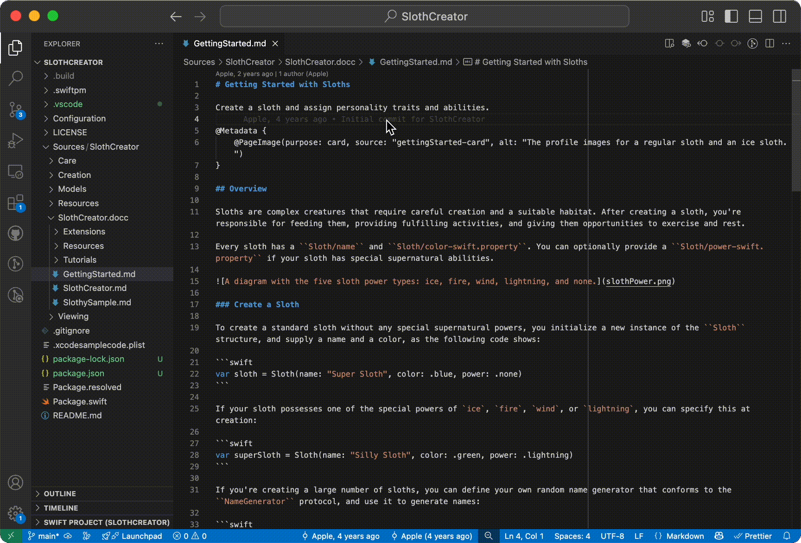

Article
Documentation Live Preview
Show a live preview of your Swift documentation while editing.
- Swift 6.2+
Overview
The Swift toolchain provides DocC, which compiles documentation for your Swift package. You can distribute compiled documentation to developers, or host the content. It’s what this project used to make its documentation! You can learn more about DocC by reading the documentation on the Swift organization’s website.
View a side-by-side live preview of your documentation as you edit it with the Swift extension for VS Code. Access this feature using the Preview Swift Documentation button at the top right of an editor, or by invoking Swift: Preview Documentation in the command palette.
This opens up a new editor pane with your rendered documentation:

See Also
Features
Automatic Task Creation
Add tasks for common operations with your Package.
Debugging
Debug your Swift executables using LLDB.
Language Features
Navigate and write your Swift code more easily with Language features.
Swift Project View
Use this view to get a high level view of your Swift project.
Running and Debugging Tests
View test results in the Test Explorer.